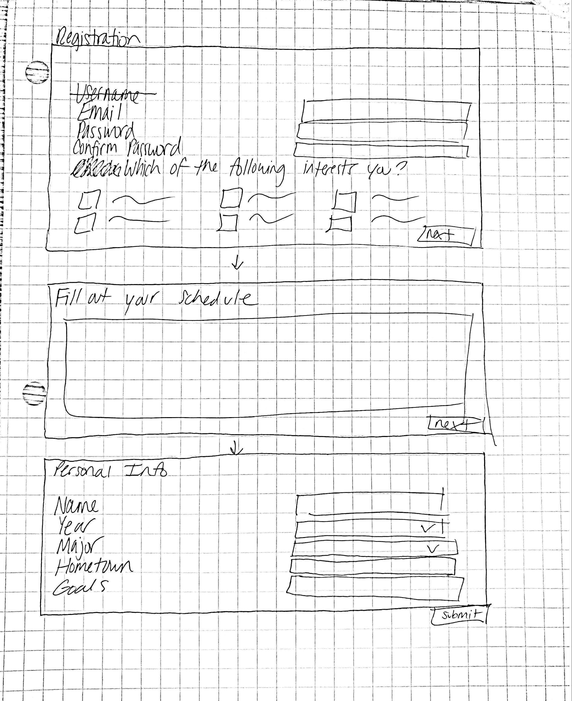
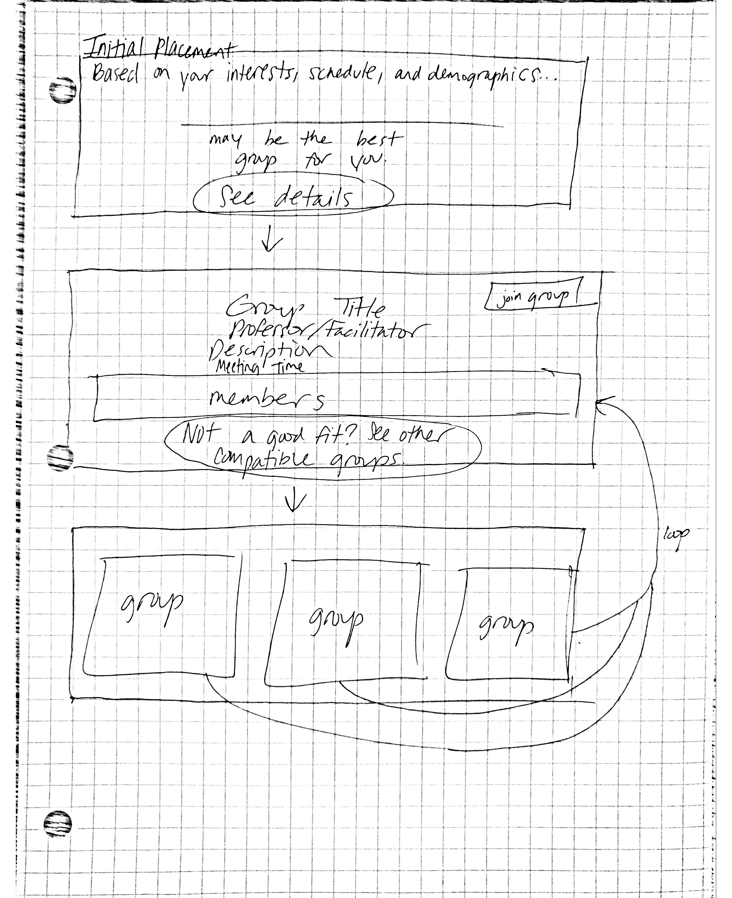
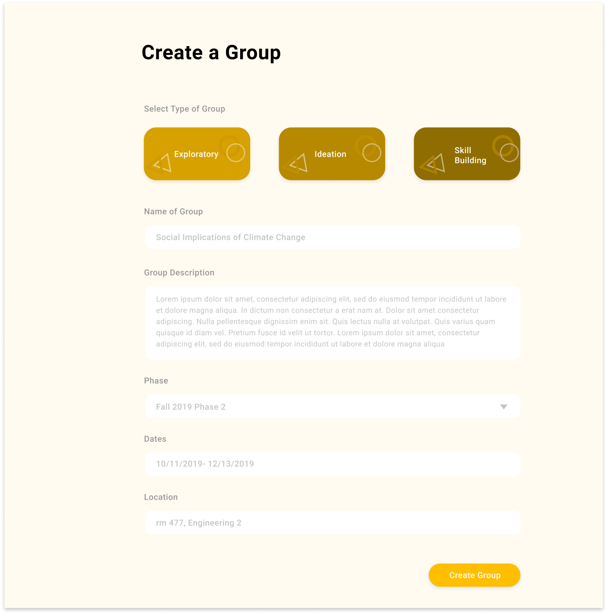
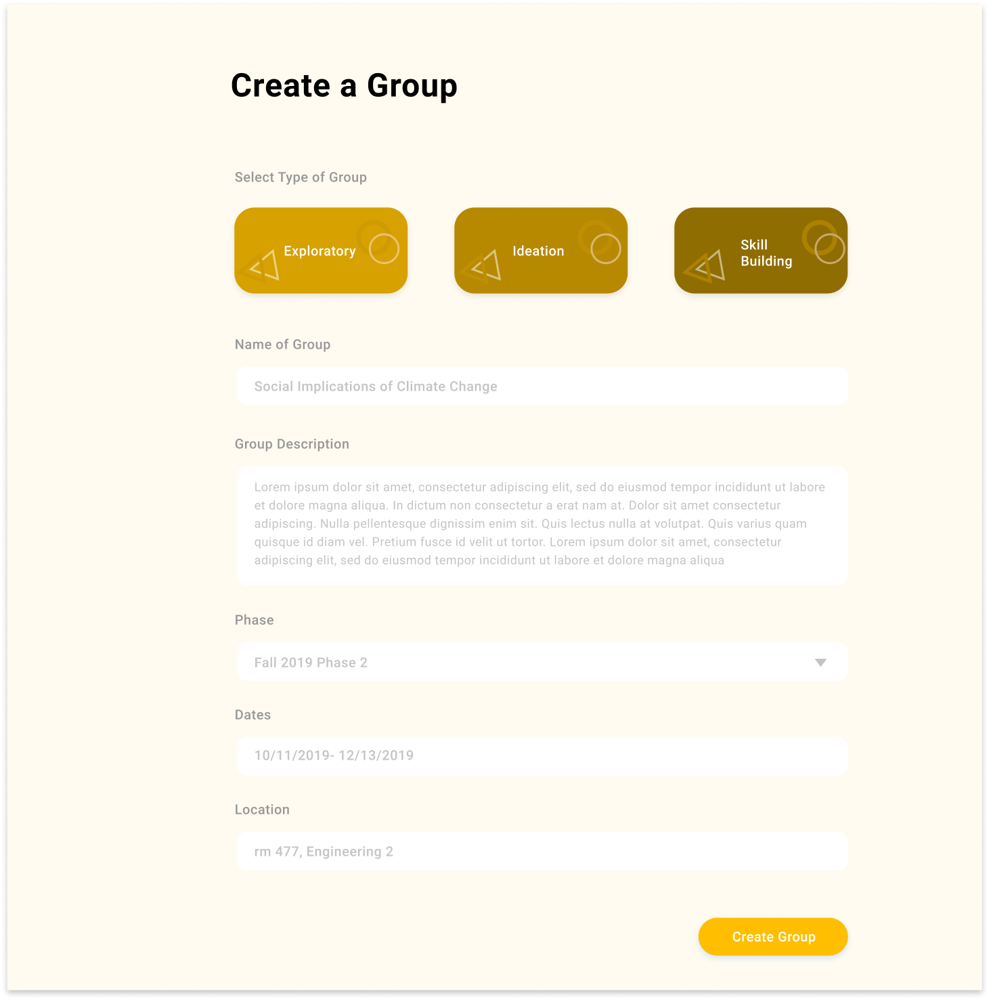
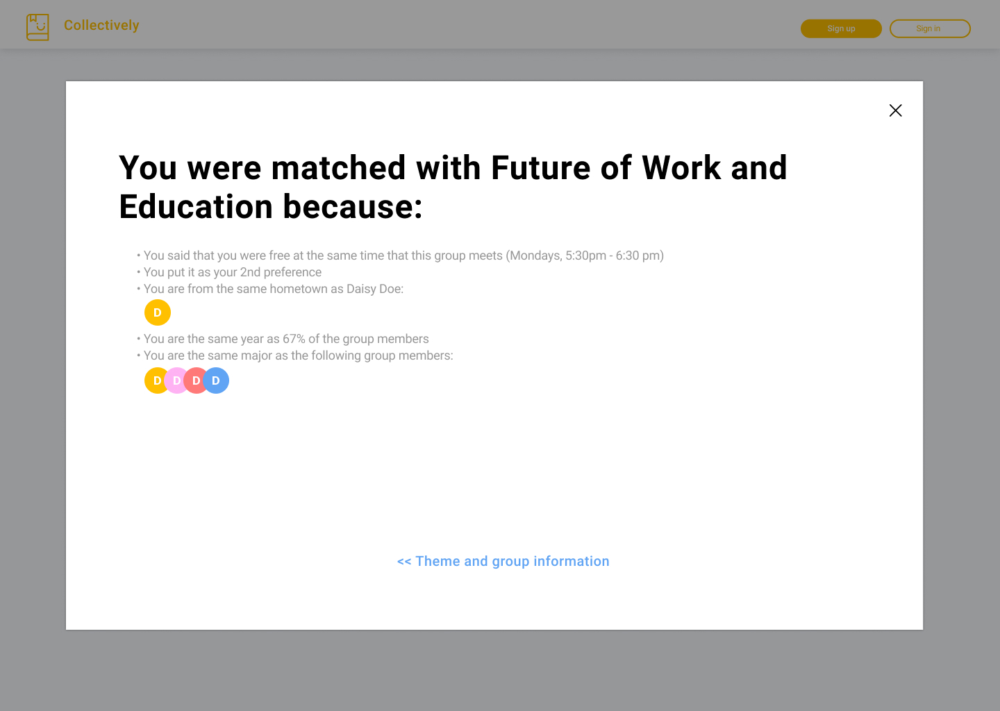
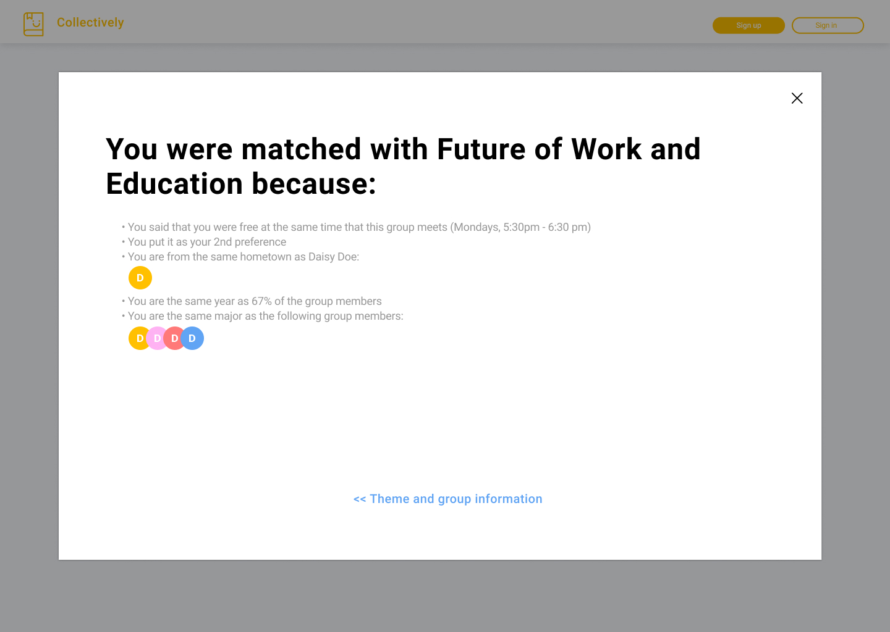
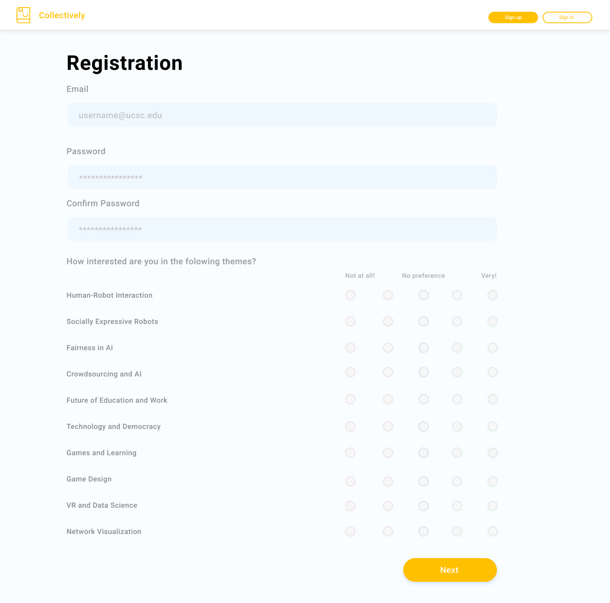
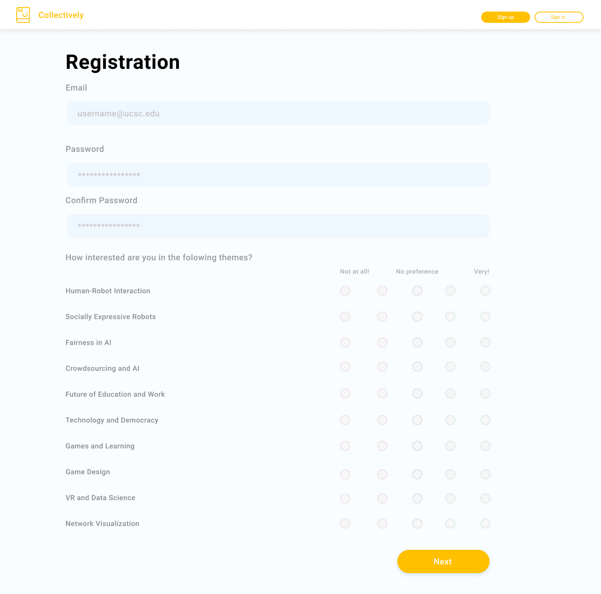
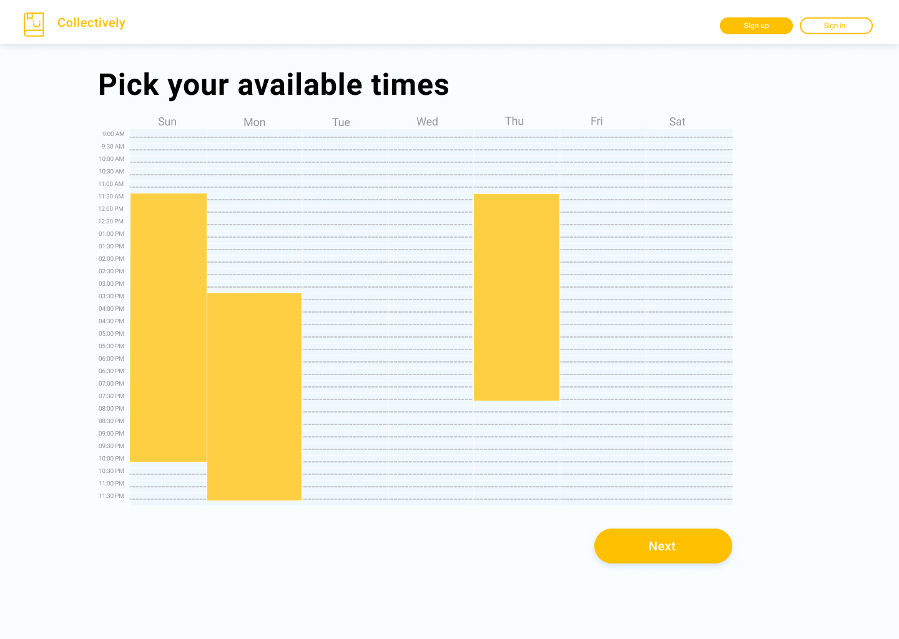
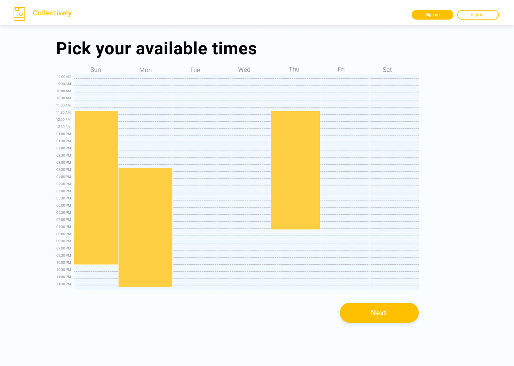

Elizabeth Dinh
Tech4Good
I have been working as an undergraduate research assistant and UX designer at UCSC professor David Lee’s Tech4Good lab since September 2019. Tech4Good focuses on studying the intersection of computational systems and social interaction. Working in this lab has been a wonderful experience because it allows me to apply my knowledge of human-computer interaction into projects and gain new skills that I would not acquire from classes.
Collectively
Introduction
Collectively aims to unite students into reading groups and skill-building groups for them to explore real world applications of computer science and other subjects.
|
Role(s)
UX Designer
UX Researcher
Front-End Developer
Date
Sept 2019 – present
|
Target Audience
Collectively is targeted at both undergraduate and graduate students at UC Santa Cruz. It also involves UC Santa Cruz professors to help them promote their labs and information relating to their areas of research.
Design Goals
We sent out surveys to eight faculty members to determine what they would want out of Collectively. From their responses, we determined that they want motivated undergraduate students who are truly interested in contributing to their research labs. This desire stems from unfavorable opinions of undergraduate research assistantsb because professors have had bad experiences with flaky and inexperienced undergraduates.
Faculty Survey Questions
- Are you working with undergraduates in your lab? If so, how do you feel about them?
- How do undergraduate research assistants compared to graduate research assistants?
- What would you share or advise a new faculty who asks you about working with undergraduate student researchers?
- What are your criteria for undergraduate students interested in your lab?
- What kind of tasks do you typically assign undergraduate research assistants?
We also surveyed 48 undergraduate and graduate students. These students were either cognitive science majors or engineering majors. Based on our survey responses, it is important that Collectively provides:
- a space to explore new ideas
- exposure to topics outside their discipline
- opportunities to meet like-minded people
- a chance to join a research lab
- a low time commitment
Student Survey Questions
- Demographics (gender, year in college, major, gender, how did you hear about us, etc.)
- What motivated you to join or return to the reading groups this phase?
- Is this your first time joining the Collectively reading groups?
- What motivated you to join Collectively?
- Do you have any concerns or questions that make you unsure whether to join?
Solutions
To attract highly motivated students as better quality research assistants, we designed Collectively so that students participate in reading groups or skill-building groups that interest them the most; doing this will help them find labs pertaining to their interests. We also decided to implement a group-matching algorithm to make the program less chaotic.
We also added featured professors to every reading group, so students are able to contact them for possible research opportunities.
Wireframes
Note that I only sketched wireframes for the registration portion; Dustin sketched the rest.



 

 

 

 
